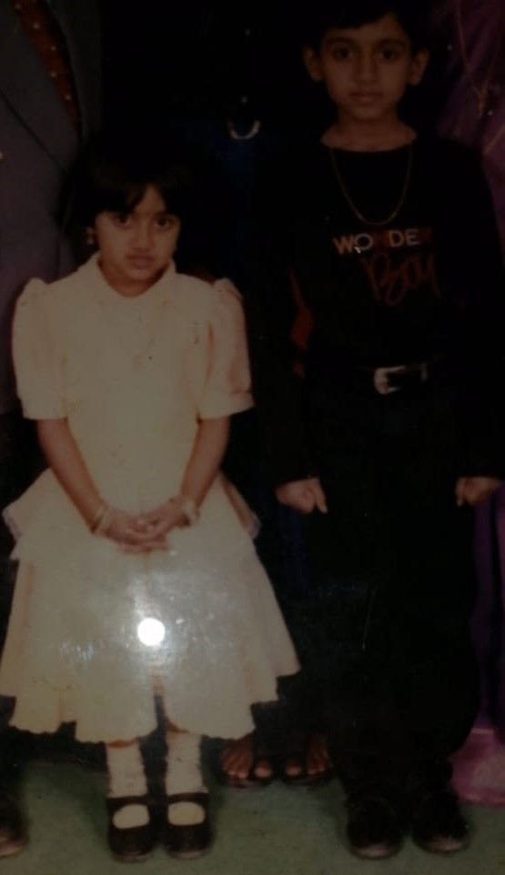
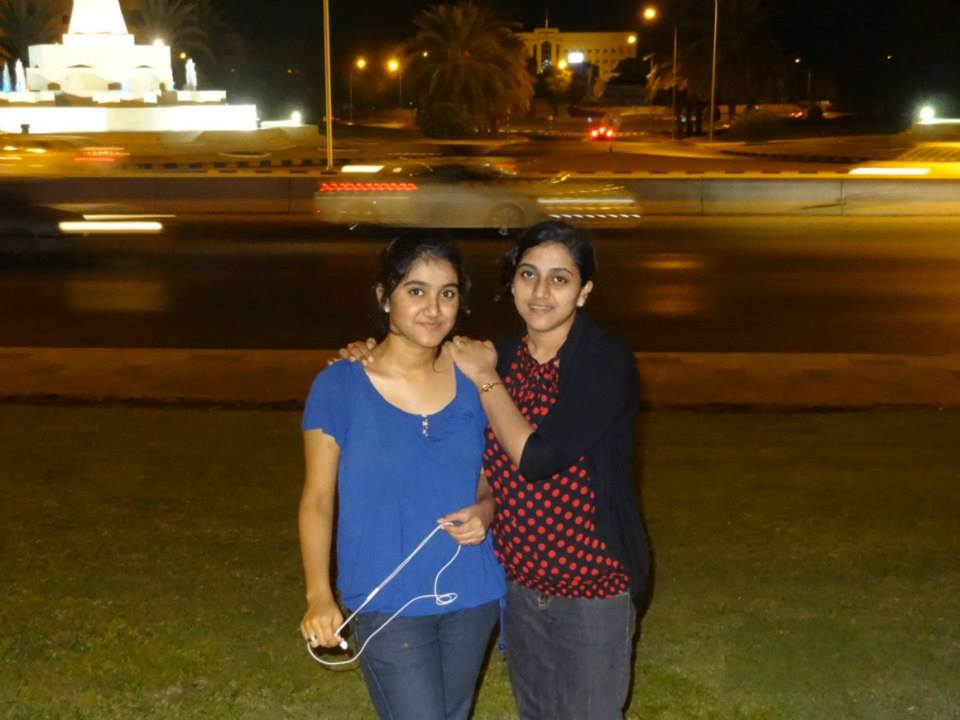
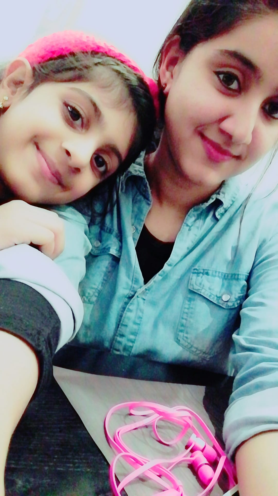

Happy Birthday To My Sister
We Love You Stubborn Lady.You Are Wonderful!
Here is how much We care about You! Look at all slides by clicking on >>>
Sisters are different flowers from the same garden.

Sister: She is your mirror, shining back at you with a world of possibilities. She is your witness, who sees you at your worst and best, and loves you anyway.
A perfect sister I am not, but oh so thankful for the ones I’ve got.
Sisters don’t need daily conversation, they don’t always need to be together, as long as they live in each other’s hearts.
Two hearts, one soul. Sisterhood.
To the outside world, we all grow old. But not to sisters. We live outside the touch of time

Sisters function as safety nets in a chaotic world simply by being there for each other.
I smile because you’re my sister. I laugh because you can’t do anything about it.
You keep your past by having sisters. As you get older, they’re the only ones who don’t get bored if you talk about your memories.
Having a sister is like having a best friend you can’t get rid of. You know whatever you do, they’ll still be there.
A loyal sister is worth a thousand friends.
Sisters are angels who lift us to our feet when our wings have trouble remembering how to fly.
Sisters are for sharing laughter and wiping tears.

A sister is one who reaches for your hand and touches your heart…
In the cookies of life, sisters are the chocolate chips.
A sister is both your mirror – and your opposite
When mom and dad don’t understand, a sister always will
A sister is a little bit of childhood that can never be lost
Sister is probably the most competitive relationship within the family, but once the sisters are grown, it becomes the strongest relationship.
Sweet is the voice of a sister in the season of sorrow.
A sister is someone who loves you from the heart. No matter how much you argue, you cannot be drawn apart. She is a joy that cannot be taken away. Once she enters your life, she is there to stay.
Of two sisters, one is always the watcher, one the dancer.
A sister is a gift to the heart, a friend to the spirit, a golden thread to the meaning of life
You and I are sisters. Always remember that if you fall, I will pick you up as soon as I finish laughing.
Side by side or miles apart, sisters will always be connected by the heart.
A sister is the kind of friend you would travel far to find, only she’s been standing right beside you all along!
We may be far apart but I am always thinking of you, you may be far away but I’ve always got your back. You are the best sister in the entire world. Happy birthday my sister.